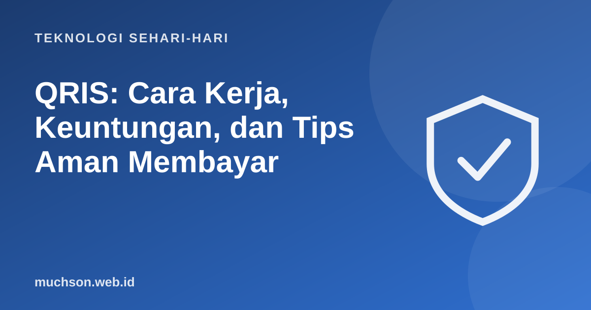

Beranda › Artikel › Teknologi Sehari-hari
Teknologi Sehari-hariQRIS: Cara Kerja, Keuntungan, dan Tips Aman Membayar
Dari warung kopi sampai kotak amal masjid, kode QRIS kini ada di mana-mana. Cukup pindai, masukkan nominal, bayar. Tapi kemudahan ini juga dimanfaatkan penipu, misalnya dengan menempel stiker QR palsu di atas QR asli. Artikel ini menjelaskan cara kerja QRIS dan kebiasaan sederhana agar pembayaran tetap aman.

Apa itu QRIS?
QRIS (Quick Response Code Indonesian Standard, dibaca "kris") adalah standar kode QR nasional untuk pembayaran yang diluncurkan Bank Indonesia bersama Asosiasi Sistem Pembayaran Indonesia (ASPI) pada 17 Agustus 2019, dan berlaku secara nasional mulai 1 Januari 2020. Sebelum ada QRIS, pedagang harus memajang banyak kode QR dari berbagai aplikasi. Dengan QRIS, satu kode bisa dibayar dari aplikasi bank atau dompet digital mana pun yang sudah mendukung QRIS.
QR statis dan QR dinamis
| Jenis | Seperti apa | Nominal |
|---|---|---|
| Statis | Dicetak dan ditempel di meja kasir | Pembeli mengetik sendiri |
| Dinamis | Muncul di layar mesin kasir atau aplikasi, berubah tiap transaksi | Sudah terisi otomatis |
Modus penipuan yang perlu diwaspadai
Kebiasaan paling penting: setelah memindai, berhenti sejenak dan baca nama penerima di layar. Pastikan cocok dengan nama toko sebelum menekan bayar.
Untuk pedagang dan UMKM
Hitung keuntungan memakai QRIS untuk usaha
Selain waktu, QRIS mengurangi risiko uang palsu dan memudahkan pencatatan. Biaya layanan (MDR) untuk pedagang mengikuti ketentuan Bank Indonesia yang bisa berbeda menurut jenis usaha dan nilai transaksi, jadi tanyakan ke penyedia QRIS Anda.
Tanya jawab
Apa itu QRIS?
Kapan QRIS mulai berlaku?
Bagaimana menghindari penipuan QR palsu?
Apakah pembeli dikenai biaya saat bayar QRIS?
Sumber dan bacaan lanjut
- Bank Indonesia
- UKM Indonesia: QRIS, satu QR code untuk semua pembayaran
- Kontan: QRIS resmi meluncur
- OJK Indonesia Anti-Scam Centre